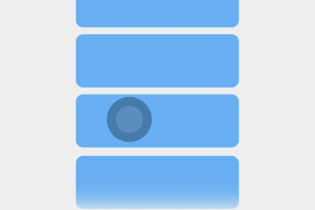

1 UX motion design
1.1 UX motion design
Human factors x motion
The visual sense of force
- Give elements a sense of force
- Convey form, physicality, and dynamism intuitively
Figure 1-2
The order of force
- Ordered, consistent, rhythmic movement creates a stronger sense of order
- A sense of order is more likely to draw the user’s attention
- A sense of order is especially important when choreographing transition elements
Figure 1-3
The control of force
- Friction, gravity, and repulsion are perceived through interactions
- The transmission of force corresponds to psychological expectations
- Elements convey the feeling of a simulated physical world through speed and rhythm
Figure 1-4

Natural and smooth
- Smoothness is a subjective experience of how easy information is to process
- Unify gesture touch, visual perception, and psychological expectations
- Basic requirements: stable frame rates, timely responses, and touch-following interaction
Figure 1-5

Efficient and fast
- Keep interface element movement minimal and simple
- Keep long-distance movement within 350 ms
- Keep short-distance movement within 250 ms
- Complete shorter animations within 150 ms
Figure 1-6

Consistent movement
- Follow consistent movement paths when choreographing actions
- Inconsistent movement distracts the user’s visual focus
- Use appropriate choreography to guide users to focus on the task
Figure 1-7